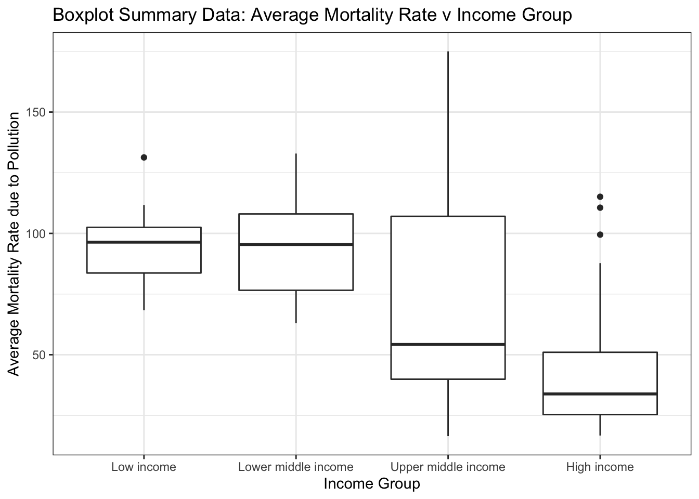

Analysis of Healthcare, Income Status of a Country, and Annual Pollution Exposure as Factors of Mortality Rate Attributed to Air Pollution
Charavee Basnet Chettri, Claire Kelly, Abby Paharsingh
Abstract
The purpose of our analysis was to investigate the effect that the rate of doctors, designated income status of a country, and annual pollution exposure has on the rate of deaths caused by diseases resulting from air pollution. Our project used data from a variety of sources, namely World Health Organization’s data on mortality rate attributed to household and ambient air pollution (per 100 000 population) and number of medical doctors (per 10 000 population), combined with data from exposure to air pollution with fine particulate matter from ‘Our World in Data’, and lastly country classifications by income data from the World Bank. Apart from the pollution data which dates to 2017, the rest of the data is from 2019. We fit a parallel slopes model with one outcome variable (average mortality rate attributed to air pollution) and three explanatory variables. Our analysis partially supported our primary hypothesis that mortality rate due to air pollution is predicted by pollution levels, income status of the country, and the rate of doctors in the country as the predictors were significant, however, the direction of the relationships contradicted our previous understanding. While generally speaking our results were statistically significant, they are not conclusive enough to make overarching statements about the effects these variables have on mortality rate caused by air pollution. We believe that further study on this topic is required to gain actionable insights.
Introduction
Since the Industrial Revolution of the 18th and 19th century, our planet has been faced with the existential challenge of man-made air pollution.\(^1\) Although humans are painfully aware of the effects of air pollution on climate change and health, the benefits that have come from industrialization have thus far seemed worthwhile. Industrialization brought with it the rise of the middle class, specialized jobs in industry, convenience, traveling possibilities, better healthcare and so much more.\(^2\) Therefore, we are faced with a dilemma. Although a debate can be had about whether industrialization was necessary to procure these benefits, a more quantifiable question is whether there are areas in which the benefits of industrialization have served to counteract the harms, such as negative health effects on humans. Our research aims to begin answering this complex question by analyzing the effects of increased health care and income on environmental mortality rates relative to pollution levels.
There are many diseases attributed to living in areas with high amounts of air pollution, such as chronic obstructive pulmonary disease (COPD), lung cancer, asthma, and respiratory infections, to name a few. The goal of this paper is to investigate whether the increase in medical care that resulted from higher industrialization has mitigated the number of deaths due to respiratory diseases caused by air pollution.
Our research explores the effects of the rate of doctors, income status of a country, and pollution exposure has on a country’s mortality rate attributed to air pollution. When looking for data, we chose to look at the income level of the country as a representation of the level of development of a country. In our currently capitalistic society, development is directly related to industrialization and more specifically the stage of industrialization a country is in. We also look at the rate of doctors in a country as a representation of its level of medical care. Finally, we used data on both the rate of air pollution and the mortality rate caused by air pollution to evaluate how mortality rate changes with the level of air pollution. Our hypothesis is that a country’s average mortality rate attributed to pollution depends on its income status, number of doctors per 100,000, and annual pollution exposure.
Methods
Data
The data for this project was pulled from a number of sources and joined by their corresponding country codes. The data for mortality rate attributed to household and ambient air pollution (per 100 000 population) sampled the general population of all UN-recognized nation-states. This data was collected by multiple organizations: (1) WHO Global Health Estimates whose data uses multiple consolidated sources, including national vital registration data, latest estimates from WHO technical programmes, United Nations partners and inter-agency groups, as well as the Global Burden of Disease and other scientific studies.\(^3\) (2) UN World Population Prospects, of which the latest assessment considers the results of 1,758 national population censuses conducted between 1950 and 2022, as well as information from vital registration systems and from 2,890 nationally representative sample surveys.\(^4\)
The data for medical doctors (per 10 000 population) sampled the population of medical doctors in UN-recognized nation-states. This sample includes generalists, specialist medical practitioners, and medical doctors not further defined, in a given national and/or subnational area. The sample was collected with help from the NHWA data platform developed to facilitate reporting in response to World Health Assembly 69.19.\(^5\) In addition to this reporting, the platform also serves as an analytical tool at the national, regional, and global levels. Complementing the national reporting through the platform, additional sources such as the National Census, Labour Force Surveys and administrative national and regional sources are also employed. Additionally, the denominator data for workforce density (i.e. national population estimates) are also obtained from the United Nations Population Division’s World Population Prospects database.
Estimates of annual concentrations of PM 2.5 air pollution are generated by combining data from atmospheric chemistry transport models, satellite observations of aerosols in the atmosphere, and ground-level monitoring of particulates. Exposure to concentrations of PM2.5 in both urban and rural areas is weighted by the population of respective UN-recognized nation-states and is aggregated at the national level. The data were provided by Institute for Health Metrics and Evaluation, University of Washington, Seattle and produced by the Global Burden of Disease study.\(^6\)
Lastly, the data for the designation of income status to country sampled the population for all 189 World Bank member countries, plus 28 other economies with populations of more than 30,000. Estimates of GNI (Gross National Income) are obtained from economists in World Bank country units who rely primarily on official data published by the countries; the size of the population is estimated by World Bank demographers from a variety of sources, including the UN’s biennial World Population Prospects.\(^7\)
Variables
We chose the average mortality rate attributed to air pollution, calculated per 100,000 of the population, as our outcome variable. This variable serves as an indication of systemic failure to alleviate the symptoms of disease caused by air pollution, and thus is a natural choice for evaluating the effects of both air pollution and healthcare access. We used three explanatory variables to understand the outcome variable. Two numeric variables – the number of doctors per 10 000 population, and the mean annual exposure to PM2.5 air pollution, measured in micrograms per cubic meter, and one categorical variable – the designation of income status to country, which is a categorical variable classifying countries as low, lower-middle, upper-middle, and high income based on what range of gross national income (GNI) per capita in U.S. dollars they fall within. These ranges are decided upon by the world bank based on numerous factors, such as global inflation, and they are adjusted on the first of July of each year.\(^8\)
The individual data sets did not have significant amounts of data missing, however in each data set there were a few different countries without information. For example, we had mortality data for Cuba, but not Income Data. Which means that although there was some data for these countries, we couldn’t use them for the comparison. Across the 183 countries that the UN had mortality data (the data set with the highest number of countries) for, only 81 of them had information across all four datasets. This constitutes about 44% of the countries.
Analysis
For our analysis, we chose a parallel slopes model with one outcome variable (average mortality rate attributed to air pollution) and three explanatory variables (mean annual exposure to PM 2.5 pollution, number of doctors per 100,000, and income group) i.e. AvgMortalityRate ~ PollutionExposure + IncomeGroup + DoctorRate. Our model selection process began with the evaluation of a the simple linear regression model between average mortality rate and pollution exposure. We then proceeded to add complexity by introducing an additional explanatory variable one at a time: first, income group, and second, number of doctors per 100,000. For each new model, we analyzed its regression statistics including the statistical significance of the coefficients, the compliance with the regression (LINE) assumptions, and the adjusted \(R^2\). When these observations were favorable, we conducted a nested F-test between the latest additive model (reduced model) and its interaction (full model) to check if the increased predictive accuracy in the interaction model was statistically significant to include. In this entire study, interactions were not indicated for any of the models. Finally, we conducted another nested F-test between the latest model with a new variable (full model) and the previous model (reduced model) to determine whether the new variable improved the effectiveness of a model. It is important to note that we included pollution exposure in our final model, despite the results of the nested F-test that compared our model to one without it as a variable. This was done to control for it so that we account for this variable’s potentially confounding nature, as a similar statistic is used to calculate our outcome variable. The resulting optimal model was a parallel slopes model with pollution exposure, income group and number of doctors predicting the average mortality rate of a country.
Results
Our model (AvgMortalityRate ~ PollutionExposure + IncomeGroup + DoctorRate) performs a statistical analysis on the 81 complete observations out of 217 from the original mortality rate dataset. In this sample, the income groups are not evenly distributed. Rather there is a skew toward higher income countries: 44.4% of high income countries, 27.1% of upper middle income countries, 17.2% of lower middle income countries, and only 11.1% of low income countries. The median mean annual exposure to PM 2.5 pollution is the highest in low income countries and the lowest in high income countries relative to each level. In contrast, the median number of doctors per 10,000 is the lowest for low income countries, and highest for high income countries. Our model sought to understand the effect of these variables on the average mortality rate of a country.
The model shows that the predicted average mortality rates of a low income country, lower middle income country, and upper middle income country are, respectively, 83.29, 79.19 and 40.37 per 100,000 population higher than that of a high income country, suggesting a negative relationship between income status and environmental mortality rate. Furthermore, for every one microgram per cubic meter increase in mean annual exposure to PM 2.5 pollution, the predicted average mortality rate of a country of any income group (given the parallel slopes model) increases by 0.26 person per 100,000, regardless of simultaneous change in the number of doctors per 10,000.
To get a clearer picture of differences in the predicted average mortality rate between each income group instead of in relation to high income countries, we performed contrasts that fixed the number of doctors per 10,000. High income countries have less annual pollution exposure than upper middle income countries, and upper middle income countries have less annual pollution exposure than lower middle income countries (p < 0.05). However, we failed to find evidence that low income countries have a statistically different pollution exposure than lower middle income countries (p> 0.05).
Based on individual t-tests for our model, the coefficients for two of the explanatory variables, income group and number of doctors per 10,000, are statistically significant (p < 0.05). However, the coefficient of the third explanatory variable, pollution exposure, became statistically insignificant when combined in an additive model with the other variables. We conducted a VIF test to investigate if adding the two other variables could have increased the uncertainty in the pollution exposure variable, rendering the coefficient statistically insignificant. However, this test does not display multicollinearity, since the VIF for all three explanatory variables are less than 5.
In our study, we are testing whether a country’s average enviormental mortality rate depends on its income status, the number of doctors per 10,000, and the exposure to PM 2.5 pollution. The results of an omnibus F-test of this model allow us to reject the null hypothesis that pollution exposure, rate of doctors, and income status are not significant predictors of mortality rate. Thus, by rejecting the null, we conclude that at least one of our explanatory variables has an effect statistically greater than zero. In addition to results yielded from the t-tests mentioned above, the nested F-test between our chosen model (full model) and other (reduced) models yielded statistically significant F-statistics (p < 0.05), allowing us to conclude that this combination of explatory variables is the optimal model for the data. In other words, the inclusion of the number of doctors per 10,000 and income group improves the effectiveness of the model, and the slope of average mortality rate is dependent on these variables.1 Furthermore, the adjusted \(R^2\) improves significantly in our chosen model (37.67%) compared to the simple regression between average mortality rate and pollution exposure (11.7%), or the additive multiple regression among average mortality rate, pollution exposure, and income group (30.26%). These results mean that our chosen model explains more variability in the outcome than the other models.
Discussion
Our original research question focused on how a country’s industrialization, operationalized as pollution levels, income status, and availability of doctors, predicted its mortality rate due to pollution. We hypothesized that while countries with higher pollution levels would have higher death rates due to pollution, that their income and availability of doctors would mitigate this effect.
While our analysis showed that our explanatory variables are mostly statistically significant in predicting mortality rates due to pollution, the nature of the effects was contrary to our original hypothesis. Overall, our chosen additive model was generally supported by model comparison tests like the nested F-test and measures of fit, such as omnibus F tests and \(R^2\) values, however the \(R^2\) value was moderate and thus not strongly convincing of the model’s explanatory power. The simple effects between variables replicated prior research findings, both in statistical significance and direction. Prominently, our analysis confirmed that income status of a country is a significant predictor of mortality rate due to pollution, which we confirmed with contrasts (all significant apart from the difference between low income and low middle income). However, once creating more complex multiple regression models, air pollution exposure lost its significance. The relationship between rate of doctors and mortality rate became positive but remained statistically significant, suggesting that pollution was no longer a significant predictor and that higher rates of doctors predicted higher mortality rates. We rationalize this change in significance and directionality in a few ways. Because mortality rate due to pollution is calculated using annual air pollution levels, we continue to assert that the correlation between the two variables is important despite its loss of statistical significance. Although analysis revealed that multicollinearity was not evident in our model, which could have explained this change, we remain confident in the underlying relationship between these two variables. As for the change in directionality between the rate of doctors and environmental mortality rates, perhaps the relationship had the reverse causality than we hypothesized. In other words, it is possible that a higher environmental mortality rate leads to the presence of more doctors, rather than more doctors increasing environmental mortality rates.
Limitations and Future Directions
Model and data limitations may account for our results not supporting our hypothesis, thus improvements on our methods could aid in creating a more accurate model.
Our model generally passed all regression assumptions, however, the discrepancies present are a limitation to the validity of our findings. Our model passed the linearity assumption, however there appears to be a slight non-linear pattern. While not prominent enough to reject a linear model, future analysis may benefit from either polynomial or logarithmic transformations. The potential benefit of transformation for linearity is compounded by the slight right skew present in the normality of residuals plot. The equal variance assumption was met, and thus not an issue to our model. Lastly, our model appears to pass the independence assumption as each observation is a distinct county at one period of time, rather than repeated measurements over time. Overall, our model passed regression assumptions, however, exploring polynomial or logarithmic transformations could be beneficial in future studies.
There are also limitations with our data itself due both to how we operationalized the concept of industrialization, as well as reliability of the data collected. Industrialization is complex and difficult to reduce to readily accessible data. Our project in part aimed to better understand the relationship between factors of industrialization. For example, we were curious about access to healthcare and its relationship with industrialization. We chose to look at the rate of doctors as we had access to this data for numerous countries, and it allowed us to adjust for population size. However, access to healthcare is not determined solely on the rate of doctors, therefore, our model does not capture the full complexity of the issue. Other metrics such as proximity to doctors, availability of specialists, and affordability of health care may capture the issue of accessibility more, and thus would provide a more reliable model. This issue of simplification of complex ideas is present in most of our variables. We used annual exposure to air pollution to determine the effects on individuals’ health, however, other forms of pollution also exist, including in water and soil. As the levels of other forms of pollution may vary from country to country, it is possible that only measuring air pollution creates an inaccurate representation of pollution’s health effects. Further research on the ideal way to operationalize complex ideas like industrialization and subsequent adjustments to the explanatory variables chosen may improve the fit of the model and potentially change the results to align with our original hypothesis.
It is also possible to consider that the data itself is not reliable. The global nature of these measures mean that data collection processes and the resources allocated to them are not consistent across all countries. For example, lower income countries may not have the same infrastructure to collect and report on specific data such as the rate of doctors, and thus our analysis is not using accurate data. In addition, the self-report nature of some of the variables introduced more uncertainty, as countries may be compelled to put forth favoring statistics. A further limitation is that data collection from different variables does not happen on the same time schedule. To have enough data to analyze, we were required to use data from 2019, rather than the most recent year. However, the most recently available pollution exposure data was from 2017, leading us to use data from two different years. We suspect that the inconsistency in year would not cause enough disruption to change the overall patterns in our data, however, it is also possible that it would make a noticeable difference in our results.
Based on the limitations of our data and the resulting model, we caution readers from generalizing from our findings. While the patterns may indeed accurately reflect the variables contributing to industrialization, it is also highly possible that with differently operationalized variables, more reliable data collection, and model transformations, that the results would be different. Instead, we frame this analysis as evidence that future study is needed to adequately comprehend the complexities of industrialization’s many factors.
Data Appendix
All statistics are evaluated using a significance level of 0.05.
LINE assumptions

Linearity The relationship between the outcome and predictors are not perfectly linear but not sufficiently non-linear to fail the linearity check.
Independence of observations Since our data describes individual countries at a singular point in time rather than one country over a period of time, there is very little likelihood that one observation would overlap with or influence another. Therefore, we have reason to believe that this condition is not violated.
Normality This condition is largely met, except for the slight right skew in the error distribution.
Equal Variance (Homogeneity) The variance of the outcome variable does not appear to drastically change as the explanatory variables change. In other words, the spread of the residuals appear relatively random and even. Therefore, this condition is not violated.
Regression table
| Estimate | Std. Error | t value | Pr(>|t|) | |
|---|---|---|---|---|
| (Intercept) | 81.8587474 | 14.1843285 | 5.771070 | 0.0000002 |
| PollutionExposure | 0.2666272 | 0.2026765 | 1.315531 | 0.1923390 |
| IncomeGroupLower middle income | -4.1014465 | 13.0071280 | -0.315323 | 0.7533921 |
| IncomeGroupUpper middle income | -42.9206153 | 15.1878599 | -2.825982 | 0.0060379 |
| IncomeGroupHigh income | -83.2922406 | 16.8980474 | -4.929105 | 0.0000048 |
| DoctorRate | 1.0773162 | 0.3268655 | 3.295901 | 0.0015003 |
Contrast
| contrast | PollutionExposure | estimate | SE | df | t.ratio | p.value |
|---|---|---|---|---|---|---|
| Lower middle income DoctorRate24.817037037037 - Low income DoctorRate24.817037037037 | 26.04489 | -4.101446 | 13.007128 | 75 | -0.315323 | 0.9838284 |
| Upper middle income DoctorRate24.817037037037 - Lower middle income DoctorRate24.817037037037 | 26.04489 | -38.819169 | 12.843748 | 75 | -3.022417 | 0.0101075 |
| High income DoctorRate24.817037037037 - Upper middle income DoctorRate24.817037037037 | 26.04489 | -40.371625 | 8.847303 | 75 | -4.563156 | 0.0000576 |
Testing VIF
| GVIF | Df | GVIF^(1/(2*Df)) | |
|---|---|---|---|
| PollutionExposure | 1.557573 | 1 | 1.248028 |
| IncomeGroup | 3.172806 | 3 | 1.212199 |
| DoctorRate | 2.937287 | 1 | 1.713852 |
Nested F-tests
| Res.Df | RSS | Df | Sum of Sq | F | Pr(>F) |
|---|---|---|---|---|---|
| 79 | 102696.55 | NA | NA | NA | NA |
| 75 | 68159.51 | 4 | 34537.05 | 9.500796 | 2.9e-06 |
| Res.Df | RSS | Df | Sum of Sq | F | Pr(>F) |
|---|---|---|---|---|---|
| 78 | 101324.30 | NA | NA | NA | NA |
| 75 | 68159.51 | 3 | 33164.79 | 12.1644 | 1.4e-06 |
| Res.Df | RSS | Df | Sum of Sq | F | Pr(>F) |
|---|---|---|---|---|---|
| 76 | 69732.29 | NA | NA | NA | NA |
| 75 | 68159.51 | 1 | 1572.777 | 1.730621 | 0.192339 |
| Res.Df | RSS | Df | Sum of Sq | F | Pr(>F) |
|---|---|---|---|---|---|
| 76 | 78031.70 | NA | NA | NA | NA |
| 75 | 68159.51 | 1 | 9872.187 | 10.86296 | 0.0015003 |
| Res.Df | RSS | Df | Sum of Sq | F | Pr(>F) |
|---|---|---|---|---|---|
| 75 | 68159.51 | NA | NA | NA | NA |
| 65 | 56533.50 | 10 | 11626.01 | 1.336712 | 0.2303624 |
Informative and Exploratory Graphs

References
Editors, H. com. (n.d.). Water and Air Pollution. HISTORY. Retrieved December 20, 2022, from https://www.history.com/topics/natural-disasters-and-environment/water-and-air-pollution
7 Negative Effects of the Industrial Revolution—HISTORY. (n.d.). Retrieved December 20, 2022, from https://www.history.com/news/industrial-revolution-negative-effects
Global Health Estimates. (n.d.). Retrieved December 18, 2022, from https://www.who.int/data/global-health-estimates
World Population Prospects—Population Division—United Nations. (n.d.). Retrieved December 18, 2022, from https://population.un.org/wpp/
Medical doctors (per 10 000 population). (n.d.). Retrieved December 18, 2022, from https://www.who.int/data/gho/data/indicators/indicator-details/GHO/medical-doctors-(per-10-000-population)
Exposure to air pollution with fine particulate matter. (n.d.). Our World in Data. Retrieved December 18, 2022, from https://ourworldindata.org/grapher/PM25-air-pollution
How does the World Bank classify countries? – World Bank Data Help Desk. (n.d.). Retrieved December 18, 2022, from https://datahelpdesk.worldbank.org/knowledgebase/articles/378834-how-does-the-world-bank-classify-countries
New World Bank country classifications by income level: 2021-2022. (n.d.). Retrieved December 18, 2022, from https://blogs.worldbank.org/opendata/new-world-bank-country-classifications-income-level-2021-2022
Footnotes
Please recall that while nested F-tests demonstrated that pollution exposure was not warranted in the additive model, we have included it because of its role in calculating mortality rate due to pollution↩︎